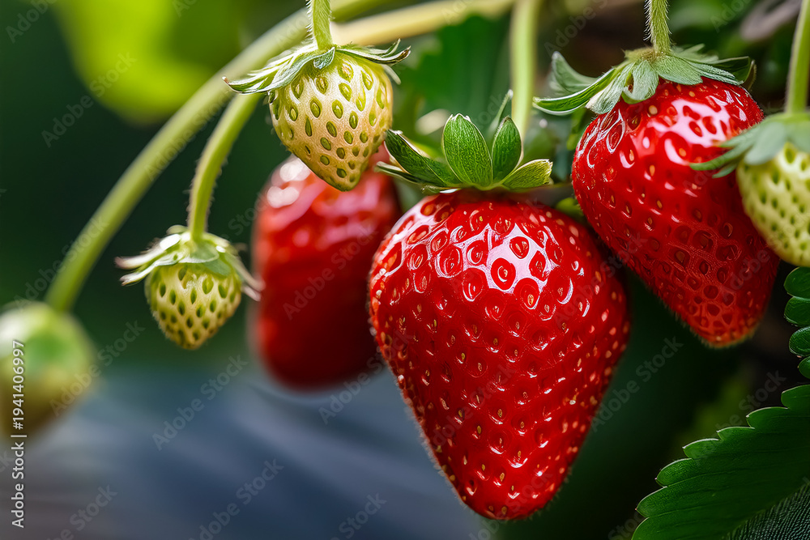
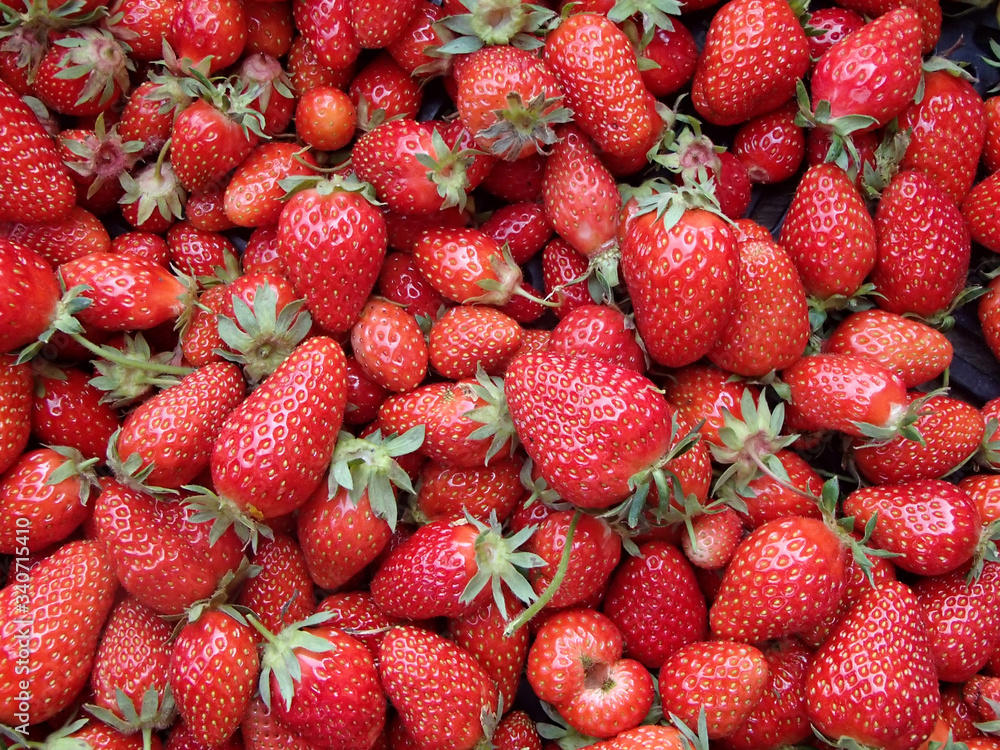
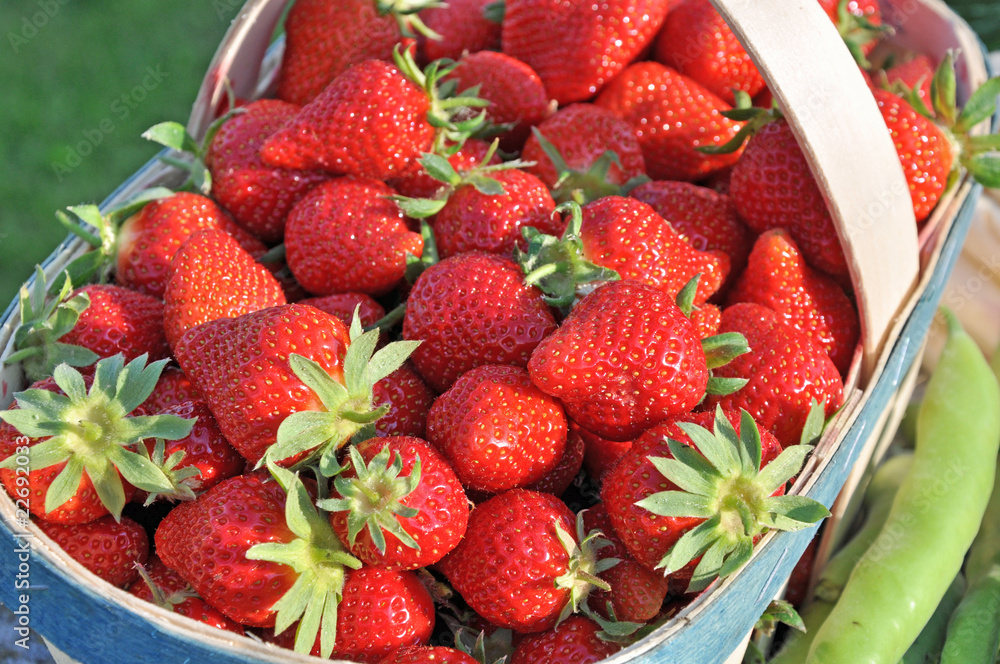
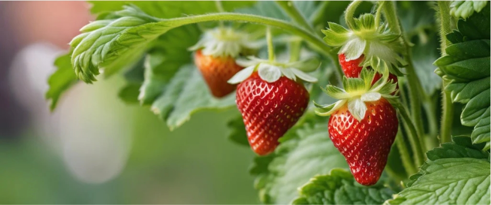

-
la gariguette

Mesure entre 2 et 3 cm de long
-
La mariguette

Mesure entre 3 et 4 cm de long
-
la Cléry

Mesure entre 4 et 5 cm de long

Bienvenue dans l'univers des fraises
Découvrez tout ce que vous avez toujours voulu savoir sur ce fruit rouge délicieux et irrésistible
Les différentes variétés de fraises
Il existe de nombreuses variétés de fraises, parmi lesquelles:
-
La gariguette, petit et allongée, très parfumée.
-
La mariguette, très sucrée et juteuse.
-
La cléry, très grosse et très sucrée.